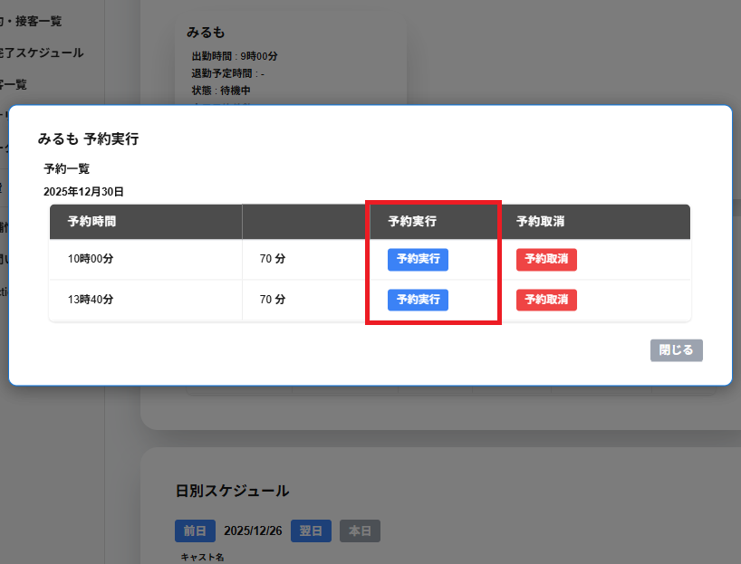

予約実行をした際に、別の予約と接客時間が重なる場合は、実行後の接客時間が重複していますという画面が表示されます。
開始日付/時間と終了日付/時間を変更して、他の予約,接客,休憩と重複していない場合、
予約実行をクリックすることで予約を実行することができます。
※重複していた場合は重複対象に重複している予約,接客,休憩が表示されます。
重複時間までをクリックすることで現在時刻から重複時間までの日付/時間が開始日付/時間と終了日付/時間に自動入力されます。
入力クリアをクリックすることで接客の所要時間になるよう開始日付/時間と終了日付/時間に自動入力されます。
